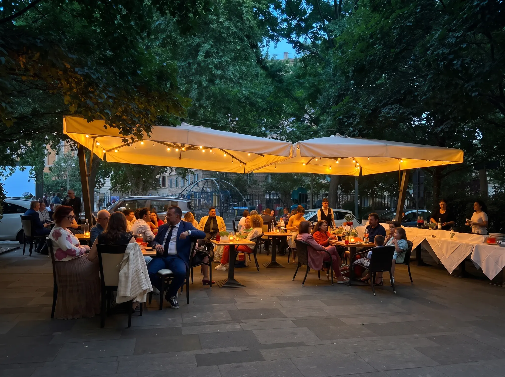
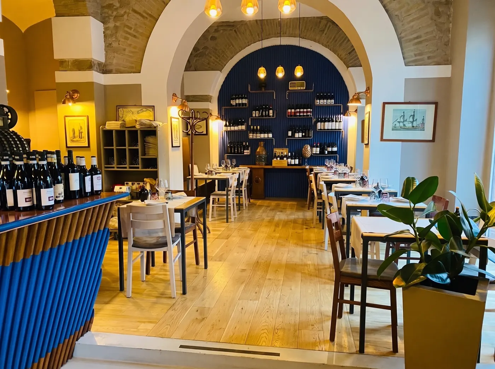
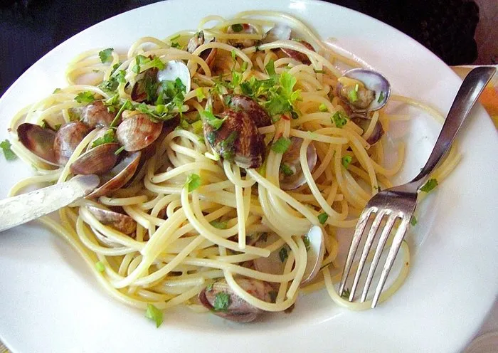
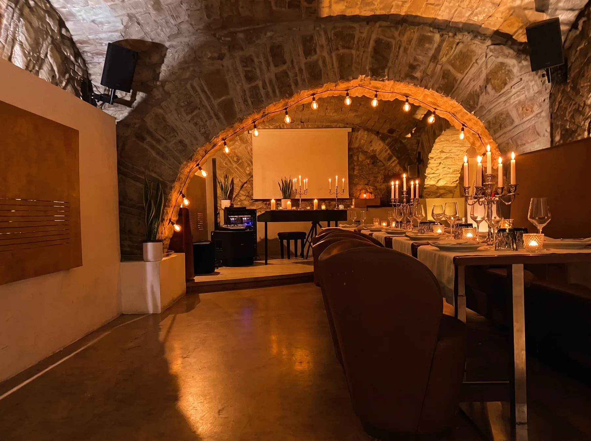
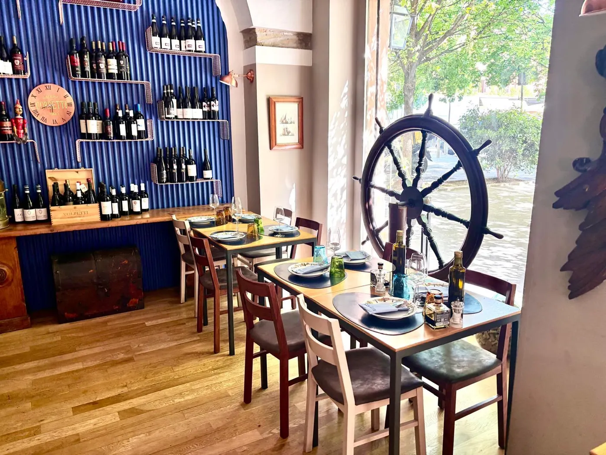

Spaghettoni alla carbonara
uova, guanciale di Sano, pepe, pecorino Romano D.O.P
16,50 €

Cucina romana di famiglia in Piazza di San Cosimato, a Trastevere. Prenotate un tavolo o scriveteci.
“Outstanding! Simple, as fresh as it get, and authentic Roman food served with love and a laugh”Inese K., Google
Cuciniamo i piatti romani come si fanno in famiglia. Da noi non c'è niente di precotto: ogni piatto si prepara con pazienza. Guanciale di Sano, pecorino romano D.O.P. e una carta dei vini con molte etichette.



Carbonara, amatriciana, cacio e pepe, vongole. Nel menù completo trovate foto, prezzi e allergeni di ogni piatto.
uova, guanciale di Sano, pepe, pecorino Romano D.O.P
16,50 €

pasta fresca all'uovo, olio E.V.O., pomodoro, guanciale di Sano, pecorino Romano D.O.P., pepe
16,50 €

pasta fresca all'uovo, farina 00, pecorino romano D.O.P., pepe
16,50 €

aglio, olio E.V.O., prezzemolo, aglio, vino bianco, peperoncino, sale
22 €
Foto di prova: le sostituiremo con quelle dei vostri piatti.
Guardate il menù
La Cantina degli Artisti è una sala per circa 40 persone che potete riservare solo per voi.
1.674 recensioni su Google
“Outstanding! Simple, as fresh as it get, and authentic Roman food served with love and a laugh”Scegliete giorno, ora e numero di persone. La richiesta arriva direttamente a noi e vi confermiamo. Se preferite, scriveteci su WhatsApp.
Grazie, la richiesta è arrivata. Vi confermiamo la prenotazione appena possibile.
Questa è solo una prova: nella bozza nessun dato è stato inviato.



Piazza di San Cosimato 27, in Trastevere. Dalle strade del quartiere ci si arriva facilmente a piedi.